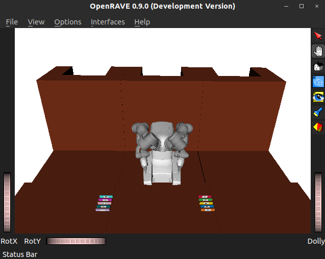
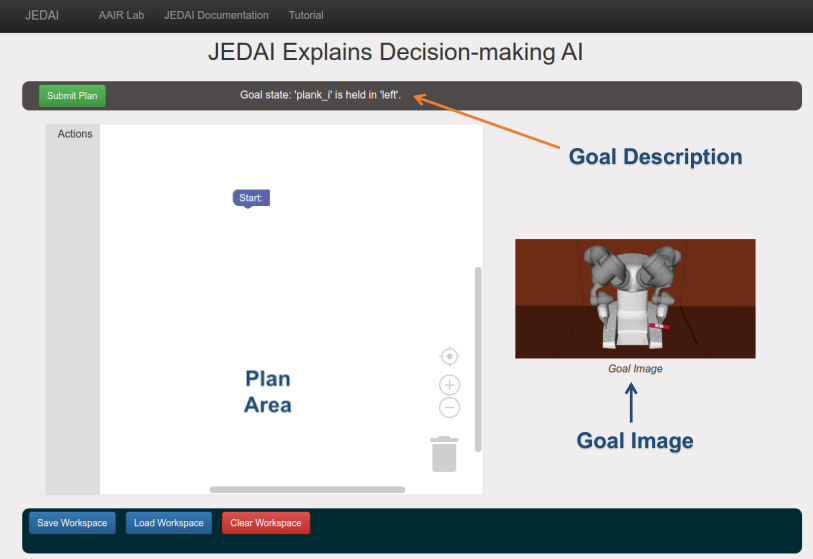
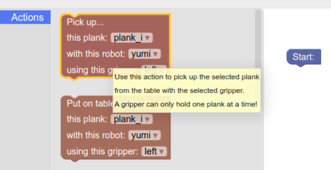
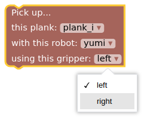

Getting Started with JEDAI¶
The goal of this system to introduce AI planning concepts using mobile manipulator robots. It uses a visual programming interface to make these concepts easier to grasp. Users can get the robot to accomplish desired tasks by connecting jigsaw-like blocks that encode the robot’s possible actions. This allows users to carry out navigation, planning and manipulation by dragging and dropping blocks instead of writing code.
The following steps will help you get started:
Step 1: Start the System¶
Open the home page using the following command in Terminal from the root directory of JEDAI:
./start_jedai.sh
Note
You can stop the system anytime using the following command:
./stop-jedai.sh
Step 2: Choose the domain and problem¶
You will need to choose a domain and a problem within that domain to use JEDAI.
Note
You can learn more about the domains here.
Follow these steps to pick a domain and problem:
Choose a domain from the dropdown menu to play around with. There are six default options to choose from: Cafe World, Delicate Cans, Dominos, Keva Planks, Stack of Towers, and Tower of Hanoi.
{kind=link}
Choose a problem from the next dropdown. The problems shown will all correspond to the domain chosen in the previous step.
{kind=link}
Step 3: Learn to Plan¶
In the field of automated planning, a “plan” is defined as a sequence of actions, where an action represents something the robot can do to change the state of the world. In JEDAI, you will learn how these plans work and the kind of requirements that are imposed on you when dealing with a system that does not have its own common sense to guess at what you really mean.
Once you have entered the JEDAI training area, you will see something like this:
{kind=link}
The white space in the middle of your browser window (it has just the Start block for now) is the planning area, called the workspace. To start building a plan, simply click the Actions tab in the toolbox on the left of the workspace and drag actions out into the blank area. Actions snap together when you line them up vertically, and the first action must be attached to the Start block.
A separate window with the 3D simulation environment will also appear as shown below. You can zoom in/zoom out, or move the camera angle to view the objects properly in this 3D environment.
{kind=link}
You will also be presented with “Goal state” above the workspace and the goal image or goal condition on the right side of your screen as shown below. These tell you what you are trying to accomplish for the current domain and problem. For example, in the Keva Planks domain, the 3D environment window will show a table with planks neatly organized in rows. The goal image shows how the planks should be configured by the end of your plan.
{kind=link}
1. You must choose a sequence of actions that the YuMi robot should execute to reach the goal configuration using a drag-and-drop interface as shown below.

If you are ever unsure about what an action does, just hover your mouse over the action block and a tooltip will appear with more information.
{kind=link}
3. You must choose the correct parameters of the actions using one of the parameters from each of the dropdown menu available in each action.
{kind=link}
Submit the plan using the
Submit Planbutton on the top left of your workspace.
So get planning! Once you have a series of actions with selected parameters that you think should reach the goal state, go ahead and click the green Submit Plan button. If your plan doesn’t quite work, JEDAI will tell you why. If your plan successfully reaches the goal, then TMP (the system that turns a high-level plan into a series of low-level instructions that the robot uses to move its individual joints) starts working. Once you are alerted that TMP has finished computing the solution to the plan, you can open the 3D environment window to watch the robot follow the steps lined out in your plan!